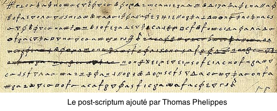
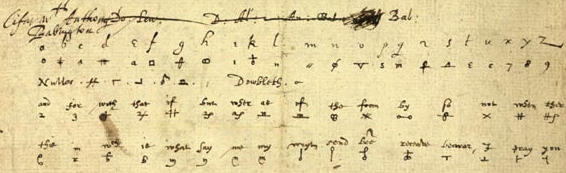

Le chiffre de Marie Stuart et le complot Babington
Marie Stuart est une figure marquante de l'une des périodes les plus troubles traversées par l'Europe, celle des guerres de religion qui déchirèrent catholiques et protestants. Elle est née le 8 décembre 1542, peu de temps après la défaite de l'armée de son père, Jacques V d'Ecosse, face aux troupes anglaises d'Henri VIII lors de la bataille de Solway Moss. Son père décède une semaine après sa naissance, et le bébé devient reine.
Le roi d'Angleterre Henri VIII rêve de réunifier l'Angleterre et l'Ecosse, mais aussi de convertir l'Ecosse catholique à la religion protestante. Il tente de convaincre la cour écossaise d'un mariage entre son fils et Marie Stuart, ce qui aurait été une solution pacifique au conflit. Cette demande est rejetée par les nobles écossais, et les armées d'Henri VIII deviennent plus intimidantes. Il est alors décidé en 1548 que la sécurité de la jeune reine sera mieux assurée si elle vit en France, en même temps qu'elle est promise au fils d'Henri II de France, François, de 13 mois son cadet.
Les années de jeunesse passées par Marie Stuart à la cour du roi de France sont heureuses, et elle épouse effectivement François en 1558. Ce dernier devient François II, roi de France, un an plus tard, en 1559, et son épouse est alors reine d'Ecosse et reine de France. Leur bonheur est toutefois de courte durée. Le roi n'a pas le tempérament pour gouverner, et surtout sa santé est excécrable; il décède en 1560, laissant le trône à son jeune frère Charles IX dont la régence est assurée par Catherine de Médicis. Marie Stuart, après un long deuil (sa mère décède au même moment), quitte alors définitivement la France pour l'Ecosse en 1561.
Entretemps, la situation en Ecosse a bien changé. Le parti protestant, mené par son propre demi-frère, Jacques Stuart, a pris beaucoup d'importance et domine le parlement. Le retour de Marie est contesté, ses excentricités sont dénoncées par les réformateurs protestants. Elle épouse en 1565 lord Darnley, avec leque elle a un enfant, Jacques, un an plus tard. Mais ce mariage tourne au désastre, Darnley est brutal, et il est finalement assassiné en février 1567, sans qu'on sache avec certitude si Marie Stuart est une des organisatrices de l'assassinat. Très peu de temps après, elle épouse James Hepburn, 4ème comte de Bothwell. Cette union est celle de trop pour les nobles protestants, qui finissent par la faire emprisonner au château de Loch Leven, puis à la faire abdiquer en faveur de son fils Jacques.
En mai 1568, Marie Stuart s'évade et lève une petite armée. Elle assiste impuissante à sa déroute lors de la bataille de Langside, et elle s'enfuit pour l'Angleterre. Y règne alors sa cousine, Elisabeth I, dont elle espère la clémence…. Malheureusement pour elle, la situation d'Elisabeth est bien trop précaire pour que ce soit le cas. En effet, Elisabeth est la fille d'un deuxième mariage d'Henri VIII. Le premier divorce n'ayant jamais été reconnu par le pape, ce remariage est considéré comme illégitime. Pour de nombreuses personnes, l'héritière légitime du trône est la descendante directe de la soeur ainée de Henri VIII. Et cette descendante directe n'est autre que Marie Stuart! C'est donc une rivale pour Elisabeth I qui entre en Angleterre. Utilisant le prétexte du meurtre de Darnley, elle la fait emprisonner...
Et c'est ainsi que nous nous retrouvons en 1585. Marie Stuart est retenue au château de Chartley Hall. Depuis 1584 et un complot déjoué contre Elisabeth, l'étau s'est resserré. Toute correspondance avec l'extérieur lui est interdite; son geôlier, l'impitoyable Sir Amias Paulet, ne cède pas à ses charmes et se montre inflexible. C'est dans ses circonstances que Gilbert Gifford, un catholique formé à la prêtrise par le Collège anglais de Rome, offre ses services à Thomas Morgan, un proche de Marie Stuart, alors à Paris, afin de rétablir le contact entre Marie et ses partisans. Il réussit ce tour de force avec l'aide d'un brasseur local, qui emballait les messages dans une poche de cuir cachée ensuite dans une bonde creuse qui fermait une barrique de bière. Le brasseur livrait la barrique au château, où l'un des serviteurs récupérait la bonde et portait à Marie Stuart son contenu.
Dans le même temps, un nouveau complot est ourdi contre la reine Elisabeth. Son instigateur est Anthony Babington, un noble anglais. Un plan est établi pour libérer Marie puis tuer la reine. Mais Babington hésite à passer à l'action. Prévenue par l'intermédiaire de Morgan, Marie envoie un premier courrier à Babington le 28 juin 1586, où elle l'assure qu'il est un ami de confiance. En retour, Babington lui transmet toutes les informations concernant le complot (l'appui des forces espagnoles, comment elle sera délivrée…). Cette lettre parvient à Marie Stuart le 14 juillet, et elle lui répond le 17, commentant tous les aspects du complot, et insistant sur la nécessité d'une aide étrangère ainsi que sur le fait qu'elle doit être libérée avant l'exécution d'Elisabeth, de peur d'être assassinée par son geôlier s'il apprend la nouvelle.
Bien sûr, pour plus de sécurité, notamment si par malheur le geôlier interceptait le courrier, toutes ces lettres sont chiffrées suivant un code mis au point par Morgan.
Le dénouement est proche, mais pas dans le sens voulu par Marie Stuart et ses partisans. En effet, Gilbert Gifford est un agent double! On ne sait pas exactement si c'est à son initiative ou si c'est sous la contrainte et après torture, mais dès son retour en Angleterre, il sert Sir Francis Walshingham, le Ier secrétaire d'état d'Elisabeth et qui est aussi chef de son service d'espionnage. Aussi, toute correspondance entre Chartley Hall et l'extérieur passe d'abord par le bureau de Walshingham, est ouverte, recopiée, et soigneusement rescellée.
Pour le plus grand malheur de Marie, Walshingham a développé depuis une petite dizaine d'années un service de cryptanalyse de grande qualité, mené par Thomas Phelippes, un vénitien. Le chiffre employé par Marie Stuart est de piètre qualité, et Phelippes n'a aucune difficulté à le briser. Dès lors, Walshingham connait tout des projets de Marie Stuart et de ses partisans. Et à la fin juillet 1586, il sait qu'il a assez de preuves pour arriver à ses fins : l'implication de Marie dans un complot contre la reine doit conduire à son exécution.
Cependant, Walshingham en veut plus. Il fait ajouter par Phelippes, qui est aussi un excellent graphiste, un post-scriptum à la lettre de Marie (en utilisant le code secret), où elle demande que Babington lui précise le nom et la qualité des autres "gentlemen" qui viendront la délivrer.
Cette lettre, et son post-scriptum, parviendront à Babington, mais il n'aura pas le temps d'y répondre. Les principaux instigateurs du complot sont arrêtés entre le 4 et le 15 août 1586, et exécutés peu de temps après. Quant à Marie Stuart, elle est arrêtée le 11 août, alors qu'exceptionnellement elle avait le droit à une promenade à cheval. Son procès se déroule en octobre. Marie Stuart y arrive confiante, persuadée que ses accusateurs ne pourront pas prouver son implication dans le complot. Elle ignore que son chiffre a été percé, et peut-être même ne l'imagine même pas. Elle est condamnée à mort, et décapitée le 8 février 1857.
L'histoire de Marie Stuart dévoile un des grands principes de la cryptographie. Mieux vaut pas de chiffres du tout qu'un chiffre trop faible ou utilisé à mauvais escient. S'ils n'avaient pas chiffré leur message, Babington et Stuart n'auraient jamais communiqué aussi librement.
Le code utilisé par Marie Stuart est une variante d'un code de substitution simple, auquel sont ajoutées quelques difficultés supplémentaires pour rendre plus difficile le déchiffrement. Concrètement, chaque lettre était remplacée par un symbole (a par un rond, h par le symbole $\infty$, x par un 7,…). 4 autres symboles, les "nuls", n'avaient aucune signification et devaient être oubliés par celui qui déchiffrait le message. Ils étaient introduits par l'expéditeur simplement pour troubler les analyses par étude statistique. Ensuite, quelques mots courant étaient également remplacés par un symbole, comme "and" par 2, "for" par 3, "with" par 4,… Enfin, le symbole $\sigma$ signifiait que la lettre qui le précède était doublée.
Ce type de chiffre, qui mêle substitution simple et code à répertoire, s'appelle une nomenclature, ou un nomenclateur. Cette méthode fut très en vogue en Europe du XVIè au XIXè siècle, et fut souvent employée avec des codes bien plus compliqués que celui de Marie Stuart. Ce dernier ne pouvait résister au talent d'un des meilleurs cryptanalystes de son siècle!